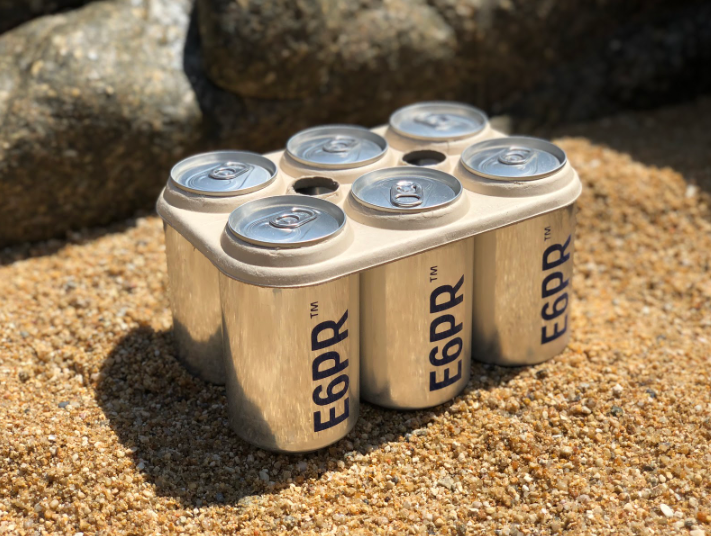

In today’s world, people have been using a large amount of plastic. In fact, plastic has been used in almost everything and in an uncontrollably rate. Plastic is becoming a threat to us, animals, and our oceans. This leads to researchers and scientists
trying to find other materials to substitute plastic for our everyday usage.

Plastic is a common material in our lives. We see it all the time, sometimes without even knowing. For most of us, plastic is just another part of our lives, we don’t think much of it. But plastic is probably the biggest problem that affects our planet.
According to the University of Georgia, about 6.3 billion metric tons of plastic was dumped annually and it is projected that 12 billion metric tons will be dumped in 2050. That’s a lot of plastic that won’t degrade. Yeah, plastic doesn’t
degrade. Well, it does, but extremely slowly. The Marine Conservancy has estimated that a foam plastic cup will take 500 years to decompose, a plastic beverage holder will take 400 years and a fishing line will take 600 years. This means
pieces of plastic from 1907 , the year plastic was created, are STILL somewhere on this planet. Below are some potential replacements and the pros and cons of each.
6 pack rings are used to hold cans of beer together. A lot of 6 pack rings end up in the ocean because of bad waste management or the littering on beaches. These are normally made of low density polyethylene, which floats on water. This means sea life
that feed near the surface have a high chance of accidentally consuming these plastics. Plastics, obviously, aren’t part of any animal’s normal diets and are very harmful to almost all sea life. E6PR, created by We Believers, Entelequia
and Private Investor, aims to solve this issue by creating 6 pack rings that are edible. The rings are made with organic beer brewing by-products like wheat and barley that can be eaten by sea animals with no issues. Although wheat and
barley are not part of most sea animals’ diets, it doesn’t harm them, unlike plastic. E6PRs are also biodegradable. They won’t remain in the ocean for long periods of time and will eventually break down into water and carbon dioxide. E6PRs
may be more expensive to manufacture, but are a viable and safe solution to the Earth’s plastic problem.
One potential replacement to plastic is milk plastic. Milk plastic is a type of plastic that is 100% biodegradable and is made using Casein formaldehyde, a plastic made from organic substances such as milk and vegetables. It is made by adding an acid
to milk. This changes the acidity of milk and makes the casein molecules unfold and reorganize into a long chain, making it form curdles Curdles are protein molecules that are attracted to each other because of a change in pH and form
lumps. The curdles that form are milk plastic. So why aren’t milk plastics used commercially? It is 100% biodegradable and seems fairly easy to make right?